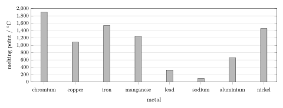
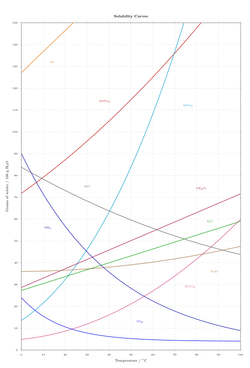
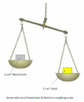
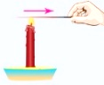
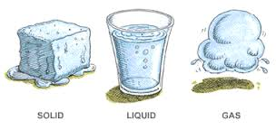
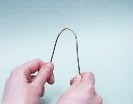

The Properties of Substances
Ozone is a gas that plays an important role in the stratosphere, where it absorbs much of the Sun's harmful ultraviolet radiation. At ground level, however, ozone is an air pollutant. It forms from other pollutants in strong sunlight and can irritate the lungs.
Penicillin is a white powder. It is used as an antibiotic. It is a very powerful drug and one reason for the increase in life expectancy in the 20th century.
Arsenic is toxic in very small amounts. It has been used in the past to get rid of unwanted heirs or heiresses to the throne.
Ethanol still is the most widely used substance which causes addiction.
Copper is used in electrical wires. Without copper not a single computer would work.
Although there are many different substances, each substance has a characteristic combination of properties. Some measured properties depend on external conditions, especially temperature and pressure. For example, more sugar dissolves in hot water than in cold water, and the density of a gas increases when the pressure increases.
How Scientists Measure Properties
Some properties can be described without a measurement. For example, a substance may be colourless, shiny, solid, or brittle. Other properties are expressed using measurements. A measurement consists of a numerical value and a unit.
| Term | Meaning | Example |
|---|---|---|
| Physical quantity | what is being measured | mass |
| Numerical value | the measured number | 2.5 |
| Unit | the agreed reference | g |
Measurements can only be compared reliably when the units are clearly defined. Scientists, therefore, use the International System of Units, abbreviated SI. It provides a common language for measurements in science, technology, and everyday life.
| Quantity | SI Unit | Symbol |
|---|---|---|
| length (l) | metre | m |
| mass (m) | kilogram | kg |
| time (t) | second | s |
| electric current | ampere | A |
| temperature (T) | kelvin | K |
| amount of substance (n) | mole | mol |
| luminous intensity | candela | cd |
In this chapter, we will mainly use units for mass, length, temperature, and time. The mole will become important in a later chapter.
The SI system contains seven base quantities with seven corresponding base units. Other physical quantities are described using derived units formed by multiplying or dividing the base units. The unit can be directly derived from the formula.
Area: A = l
Volume: V = l
Density:
In the laboratory, units such as grams, millilitres, cubic centimetres, and degrees Celsius are often more convenient than the corresponding SI units.
| Quantity | SI unit | Common laboratory units |
|---|---|---|
| Mass | kg | g, mg |
| Volume | m | L = dm |
| Temperature | K | |
| Time | s | min |
The same unit may be used with a prefix when a value is very large or very small. A prefix changes the unit by a power of ten.
| Prefix | Symbol | Factor | Power of ten |
|---|---|---|---|
| kilo | k | 1'000 | 10 |
| centi | c | 0.01 | 10 |
| milli | m | 0.001 | 10 |
| micro | 0.000 001 | 10 |
States of Matter
| volume | density | shape | fluidity | |
|---|---|---|---|---|
| solid | fixed volume | |||
| liquid | no defined shape | |||
| gaseous | low | flows easily |
The Particle Theory of Matter
According to the particle theory of matter all substances are made up of particles. The particles are extremely small, so we cannot see them. In a certain substance, for example water, all particles are the same. Particles of different substances are different from each other.
When a substance is in its solid state, the particles touch each other and are in a regular pattern. The particles are very strongly attracted to each other. They don't move around but vibrate on the spot.
The letter used for the solid state is (s).
When a substance is in its liquid state, the particles are free to move around, but they are still in contact. The particles are strongly attracted to each other, but there are no regular patterns. Under the influence of gravity, the particles slide off each other.
The letter used for the liquid state is (l).
When a substance is in its gaseous state, the particles don't touch each other. The forces of attraction between the particles are very weak. The particles move fast in all directions. There is no regular pattern.
The letter used for the gaseous state is (g).
Here, a simulation can be found to visualize the states of matter.
Melting and Boiling Points
The melting point (mp) is the temperature at which a solid and its liquid state coexist while the substance melts. For a pure substance at a given pressure, melting occurs at a characteristic temperature. The melting point can therefore help identify an unknown substance.
The reverse process is freezing. At the same pressure, a pure substance freezes at the same temperature at which it melts. Pressure usually has only a small effect on the melting point of most substances.

Name the metal with the lowest melting point.
List the metals in order of increasing melting point, beginning with the lowest.
An unknown metal has a measured melting point of 1050
C. Which metal in the chart is the most likely match? Explain your choice.
The boiling point (bp) is the temperature at which a liquid boils throughout the liquid. During boiling, bubbles containing the substance in the gaseous state form inside the liquid, rise to the surface, and escape.
Boiling begins when the vapour pressure of the liquid equals the surrounding pressure. The boiling point, therefore, depends strongly on pressure. At standard atmospheric pressure (1013 hPa), pure water boils at 100
The reverse process is condensation. At the same pressure, a pure substance condensates at the same temperature at which it boils.
Evaporation is the change from a liquid to a gas at the surface of the liquid. It can occur at temperatures below the boiling point. In contrast, boiling occurs throughout the liquid.
A substance can also change directly from a solid to a gas. This process is called sublimation. The reverse change, from a gas directly to a solid, is called resublimation.
| substance | melting point / | boiling point / |
|---|---|---|
| sodium | 98 | 883 |
| radon | - 71 | - 62 |
| ethanol | - 114 | 78 |
| cobalt | 1495 | 2927 |
| nitrogen | - 210 | - 196 |
| propane | - 187 | - 42 |
| ethanoic acid | 17 | 118 |
Classify each substance as solid, liquid, or gaseous at 25
C and standard atmospheric pressure. Which substance has the smallest liquid temperature range?
Which substances are gaseous at -50
C? Which substance has the lowest melting point?
Which substance is liquid at 2500
C?
Solubility
When sugar is added to tea, it appears to disappear. However, the sugar is still present: it has dissolved. In this example, the tea acts as the solvent, the sugar is the solute, and the sweetened tea is a solution.
Only a limited amount of a solute can dissolve under given conditions. If more sugar is added than can dissolve, some remains undissolved. The solution is then saturated.
A solution is a homogeneous mixture consisting of a solvent and one or more solutes. A solution in which water is the solvent is called an aqueous solution. A substance is soluble in a particular solvent if a noticeable amount dissolves; otherwise, it is described as insoluble or only slightly soluble.
A saturated solution contains the maximum amount of dissolved solute possible at a specified temperature. Additional solute remains undissolved.
Solubility depends on the substances involved and often on temperature. The values below compare the solubility of several substances in water at 20
| table salt (sodium chloride) | 35.9 |
| limestone (calcium carbonate) | 0.002 |
| ethanol | any amount |
| bromine | 3.8 |
| ammonia | 74'000 |
| oxygen | 3.2 |
| A | solute | 1 | The process of adding a solid to a liquid so that you can no longer see separate pieces of the solid. | |
| B | solvent | 2 | A substance that is dissolved in a liquid. | |
| C | solution | 3 | A substance is … in a liquid if it dissolves in the liquid. | |
| D | dissolving | 4 | The mass of substance that dissolves in 100 ml of water. | |
| E | soluble | 5 | A liquid in which another substance is dissolved. | |
| F | insoluble | 6 | A substance is … in a liquid if it does not dissolve in the liquid. | |
| G | solubility | 7 | A mixture of a liquid and a dissolved substance. |
What difference can you observe between the solubility of gases (
, , ,…) and solids. Compare how the solubility of
and changes with temperature. According to the graph, how many grams of
dissolve in 100 g of water at room temperature? Explain why the graph alone does not directly give the mass required to prepare 250 mL of saturated solution.

Density
An iron dumbbell can have the same mass as a much larger wooden object. The reason is density. Density describes how much mass is contained in a given volume. The Greek letter
The SI unit of density is kg/m
Density depends on temperature, pressure, and the state of matter. The effect of pressure is especially important for gases. Density values should, therefore, be reported together with the relevant conditions. Under specified conditions, density is a characteristic property that can help identify a substance.
Examples at 20
| Gold | 19.3 |
| Silver | 10.5 |
| Ethanol | 0.789 |
| Mercury | 13.5 |
| Oxygen | 1.33 kg/m |
| Carbon Dioxide | 1.84 kg/m |
| substance | mass / g | volume / cm | density / (g/cm |
|---|---|---|---|
| balsa wood | 16.0 | 80.0 | 0.200 |
| oak wood | 42.0 | 60.0 | |
| copper | 17.8 | 8.90 | |
| aluminium | 4.00 | 2.70 |
g/cm
kg/L
mg/
L
Calculate the density of the metal and identify it using the densities given earlier in this section.
During the experiment, a small air bubble remains attached to the metal. Explain how this affects the calculated density.
Other Properties
Not all characteristic properties are numerical. Chemists also describe substances using observable or testable properties such as colour, odour, electrical conductivity, thermal conductivity, brittleness, and malleability.
| A | colour | 1 |  | |
| B | ductility/ malleability | 2 | ||
| C | thermal conductivity | 3 |  | |
| D | solubility | 4 |  | |
| E | odor | 5 |  | |
| F | electrical conductivity | 6 | ||
| G | brittleness | 7 | ||
| H | density | 8 | ||
| I | state of matter at room temperature | 9 |
All the properties discussed in this chapter are physical properties. Substances also have chemical properties, which describe how they react with other substances. These properties will be discussed in a later chapter.